GERL: Grounding Experiential Reinforcement Learning for Generalist Agents
Abstract
Generalist robotic agents must learn from experience, but traditional reinforcement learning scales poorly: as horizons grow, successful trajectories become rare and longer trajectories prevent effective credit assignment, starving the agent of learning signal. Long-horizon reasoning differs from reactive control, so we focus on training a System 2 controller. ExpeL (Zhao et al., 2024) uses frozen LLM priors, leveraging their strong world knowledge and few-shot learning. However, in long-horizon tasks, completion rates are too low to bootstrap insight extraction and learned insights are corrupted by hallucinations. We introduce Grounded Experiential Reinforcement Learning (GERL), which addresses both failures using a teacher LLM with oracle access to simulator state. The teacher advice both allows otherwise unsuccessful episodes to succeed and grounds the generated insights distilled from each trajectory, raising the task completion rate and learning efficiency. This allows us to achieve SOTA performance on the realistic BEHAVIOR-1K challenge, achieving 16% binary success at roughly 1/1000th the training cost of prior work (not including a System 1 policy). Ablations confirm that the learned heuristics, not the base model, drive the performance gain. Furthermore our policy is model and embodiment agnostic, inheriting improvements from stronger LLMs and generalising to real hardware.
{kind=link}
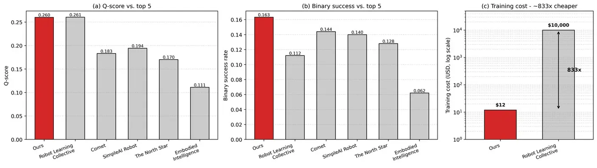
1Introduction
“If you put ChatGPT in a robot, how do you train it?”
The development of intelligent robotic agents promises to transform human labour through extensive automation and expansion of human affordances (Eloundou et al., 2023). Over the last decade, significant research has been conducted in robotics. Famous demonstrations such as the humanoid Atlas from Boston Dynamics show robots jumping, opening doors and navigating their environment (Boston Dynamics, 2025). However, we do not see robots helping us in our everyday lives because of the difficulty of training long-horizon policies such as tidying the house or going shopping. While reactive (System 1) policies excel at simple pick-and-place tasks, as horizons grow, successful trajectories become rare causing reward sparsity and preventing effective credit assignment (which actions caused reward), starving the agent of learning signal.
The difficulty of this challenge is captured by the BEHAVIOR-1K (Li et al., 2024) benchmark, a simulated environment of 1000 long-horizon household tasks (e.g. picking_up_trash, putting_dishes_away_after_cleaning). Current SOTA achieves only 11% binary success on the benchmark’s 50 evaluation tasks (Larchenko et al., 2025), at a cost of $10k and a month of training.
Generalisation requires information-rich, diverse learning experiences. Prior works train using supervised fine-tuning (imitation learning), in which policies imitate expert data, but this data is often suboptimal and policies struggle to generalise out-of-distribution. For example, the expert trajectories used to train Larchenko et al., 2025 had no recovery examples, so their policy stalls on novel states (e.g. a knocked-over glass). Reinforcement learning with verifiable rewards (RLVR) extends learning into interactive settings, allowing the agent to discover optimal policies through trial and error; however, RLVR is bottlenecked by two inefficiencies: sparse rewards (the agent rarely completes long-horizon tasks, so there is no learning signal) and credit assignment (what caused success or failure) must be inferred implicitly from scalar rewards. The resulting information sparsity creates a process that is very sample inefficient (Shi et al., 2026).
We argue that these inefficiencies are better addressed by decomposing the problem. Long-horizon tasks require a different kind of reasoning than reactive control: planning, sub-goal decomposition, and recovery, yet existing approaches train end-to-end across both. We instead focus on training an LLM System 2 policy that reasons in language above the controller, delegating low-level execution to existing reactive skills. Language is the natural medium for hierarchical planning, and language models inherit this along with strong world knowledge and few-shot learning (Brown et al., 2020). Rather than encoding experience into weights through gradient updates, which is expensive, model-dependent, and can hurt generalisation, we accumulate it as natural-language context that a frozen model can apply to new tasks directly. This experiential learning paradigm, first explored by ExpeL (Zhao et al., 2024), uses natural-language reflection to address credit assignment directly, which together with the strength of the prior raising the completion rate, provides a far denser per-episode learning signal.
However, in long-horizon robotics this paradigm hits two failure modes. First, initial completion rates remain too low to generate the successful experiences insight generation depends on. Second, hallucinations corrupt heuristics and execution. ExpeL’s own ablations show that hallucinated reflections degrade insight extraction (Zhao et al., 2024, §5.6), and ungrounded heuristics carry that error forward into task following. Furthermore, hallucinations lower the completion rate by preventing successful task completion to generate experiences.
We present our Grounded Experiential Reinforcement Learning (GERL) agent, which uses a grounded teacher LLM to address both these failure modes: low completion rates (sparse reward) and hallucinated credit assignment. Because completion rate is learning efficiency, we use the teacher to boost completion rates directly by providing escalating oracle feedback to struggling episodes, allowing otherwise unsuccessful trajectories to succeed and increasing the reward signal. We further address credit assignment by grounding the distilled natural-language insights with the oracle feedback data. By maximising learning efficiency, we accumulate enough generalisable signal to reach SOTA performance at a fraction of the training cost of prior work.
2Related Work
2.1Visual language action (VLA) models
Building on the success of pre-trained LLMs, VLA models extend LLMs to predict in robot joint space, unifying perception, planning and control as an end-to-end policy. RT-2 (Brohan et al., 2023) first demonstrated this by fine-tuning a vision-language model (VLM) to predict discrete actions for short-horizon tasks (e.g. place orange in matching bowl) (Figure 2.1).
{kind=link}
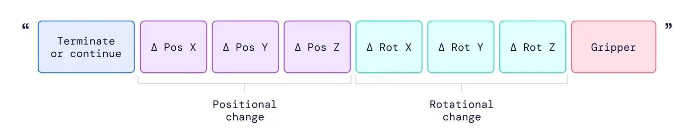
Subsequent work developed this paradigm: π0 (Black et al., 2024) introduced flow matching (predicting action tokens by diffusion rather than autoregression) for faster inference and continuous action values (improving dexterity). However, the current SOTA VLA on the BEHAVIOR-1K benchmark (Larchenko et al., 2025) achieves just 11% binary success, requiring 10,000 expert demonstrations (1200+ hours) and approximately $13,000 in compute on 8×H200 GPUs. The authors' own failure analysis attributes this ceiling to long-horizon recovery, failed grasps the policy cannot retry. As discussed in Section 1, recovery behaviours like these can in principle be learned via reinforcement learning, but doing so end-to-end is highly inefficient: gradient updates over a single end-to-end policy must absorb both reactive control and long-horizon planning from one reward signal, which is sparse and credit-assignment-hard at the horizons BEHAVIOR-1K demands. Experiential reinforcement learning with frozen LLMs addresses these inefficiencies using the ExpeL paradigm, but is still very computationally expensive to train as it uses gradient updates. We instead leverage the few-shot learning paradigm using frozen model weights as discussed in Section 2.3.
2.2Hierarchical Policies and Low-Level Controllers
As justified in Section 1 we decompose the long-horizon robotic control into a low-level executor (System 1) and a high-level planner (System 2). The low-level executor is responsible for reactive control (e.g. grasping objects) and the high-level planner is responsible for long-horizon reasoning (e.g. task planning).
SayCan (Ahn et al., 2022) pairs an LLM planner with a learned value function over pretrained skills; Code as Policies (Liang et al., 2023) and ProgPrompt (Singh et al., 2023) emit Python that calls perception and control primitives; Inner Monologue (Huang et al., 2022) closes the loop with text-form feedback; and Octopus (Yang et al., 2023) instantiates the same primitive-set design in OmniGibson, the simulator BEHAVIOR-1K is built on. Most directly, ELLMER (Mon-Williams et al., 2025) implements a real-world System 1 controller for long-horizon coffee-making, in which high-level primitives such as find_object("mug") are realised by a full perception–control pipeline: GPT-4V and YOLOv8 detect and localise the target object in the RGB image, RGB-D depth sensing lifts the detection to a 3D pose in the robot’s coordinate frame, and a motion planner with inverse kinematics executes the trajectory under force-feedback control. GERL’s symbolic API adopts the same abstraction in simulation via teleportation and state changes, justified by ELLMER’s demonstration that such primitives are realisable on real hardware with off-the-shelf computer vision and motion planning.
2.3Experiential learning with frozen LLMs
Few-shot learning is far more sample-efficient and computationally cheaper than gradient updates, enabling rapid learning from a handful of trajectories. Language is itself a natural representation for long-horizon, multi-step tasks, with the hierarchical structure planning requires. Because no weight access is needed, the approach is model-agnostic and can improve with future LLM advancements. Furthermore, natural language feedback addresses credit assignment directly, as opposed to low-information scalar rewards. A growing body of work therefore explores the paradigm of experiential learning with frozen LLMs, in which a student LLM learns from experience by distilling natural-language heuristics from its own trajectories which are then used at inference. The efficiency of this paradigm allowed us to train in just 16 hours.
ExpeL (Zhao et al., 2024) accumulates reusable insights across a training set of tasks by contrasting successful and failed trajectories, then injects the accumulated insights and top-k similar successes into the prompt at evaluation. It builds on Reflexion (Shinn et al., 2023), which introduced the per-episode loop of writing a verbal critique and prepending it to the next attempt, treating reflection as a “semantic gradient”. Voyager (Wang et al., 2023) and GITM (Zhu et al., 2023) explore an alternative memory representation in Minecraft, accumulating libraries of executable code skills rather than prose. WALL-E 2.0 (Zhou et al., 2025) takes a third route, inducing symbolic rules from prediction–observation mismatches and performing model-predictive control over the aligned world model. The same loop has matured rapidly in agentic coding, requiring few-shot generalisation; tools such as Claude Code (Anthropic, 2024) and SWE-agent (Yang et al., 2024) learn from environment feedback and can consolidate to markdown (e.g. CLAUDE.md).
However, in long-horizon robotics, the completion rates for language model priors are too low to bootstrap insight extraction and ungrounded LLM reflections corrupt the heuristic pool with hallucinations that further lower the completion rate. Building on ExpeL, GERL closes the gap with a teacher LLM that has oracle simulator state access, allowing it to provide grounded feedback to struggling episodes, boosting completion rates and grounding the distilled heuristics. We simplify our work by storing heuristics in model context rather than graphical structures (Zhou et al., 2025); we hypothesise that as the instruction-following ability of language models increases, graphical structures for storing heuristics become less important.
3Method
Similar to ExpeL (Zhao et al., 2024), GERL works by learning a natural-language heuristic from experience to complete long-horizon household tasks (see Figure 3.2).
The policy interacts with the simulator using a symbolic API (Section 3.1) that abstracts low-level control into high-level affordances (e.g. navigate_to(object), toggle_on(object)).
The heuristic is learned by 3 components: (1) a student-teacher episode loop that completes training tasks and generates trajectories with help from an oracle teacher, (2) an insights model that generates heuristics from trajectories, and (3) an interval and final consolidation model that reduces heuristic noise by removing duplicates and consolidating similar insights.
Following Section 1 and Section 2, this training loop (Figure 3.2, pseudocode in Algorithm 3.5) is designed to maximise the learning signal (information gain) from each episode by addressing the two key inefficiencies of RL-style exploration: low completion rates (sparse reward) and poor credit assignment. We boost completion rates directly with a teacher LLM that provides escalating oracle feedback to struggling episodes, and we address credit assignment by distilling natural-language heuristics from each episode (e.g. “you failed because there were multiple instances of the target object: place all the apples in the bowl, not just one”). By maximising learning efficiency, we accumulate enough generalisable signal to reach SOTA performance at a fraction of the training cost of prior work.
All model weights are frozen and at inference the policy is just the student LLM with the final consolidated heuristics in its system prompt.
3.1Simulator Interaction
Symbolic API.
As LLMs lack grounding to the robot embodiment, predicting 3D poses directly is infeasible without fine-tuning. Following ELLMER (Mon-Williams et al., 2025) and Octopus (Yang et al., 2023), we use a symbolic API that abstracts low-level control into high-level primitives / affordances using semantic navigation (e.g. navigate_to(object), toggle_on(object)). This makes the policy fully embodiment agnostic. We implement these primitives using simulator teleportation and state changes. This abstraction is justified: ELLMER (Mon-Williams et al., 2025) and RT-2 (Brohan et al., 2023) implement high-level primitives running on real hardware via off-the-shelf vision and inverse-kinematics controllers or VLAs.
API details. As introduced in Octopus (Yang et al., 2023), we implement 18 action primitives that allow the model to interact with the simulator (see Figure 3.1).
{kind=link}
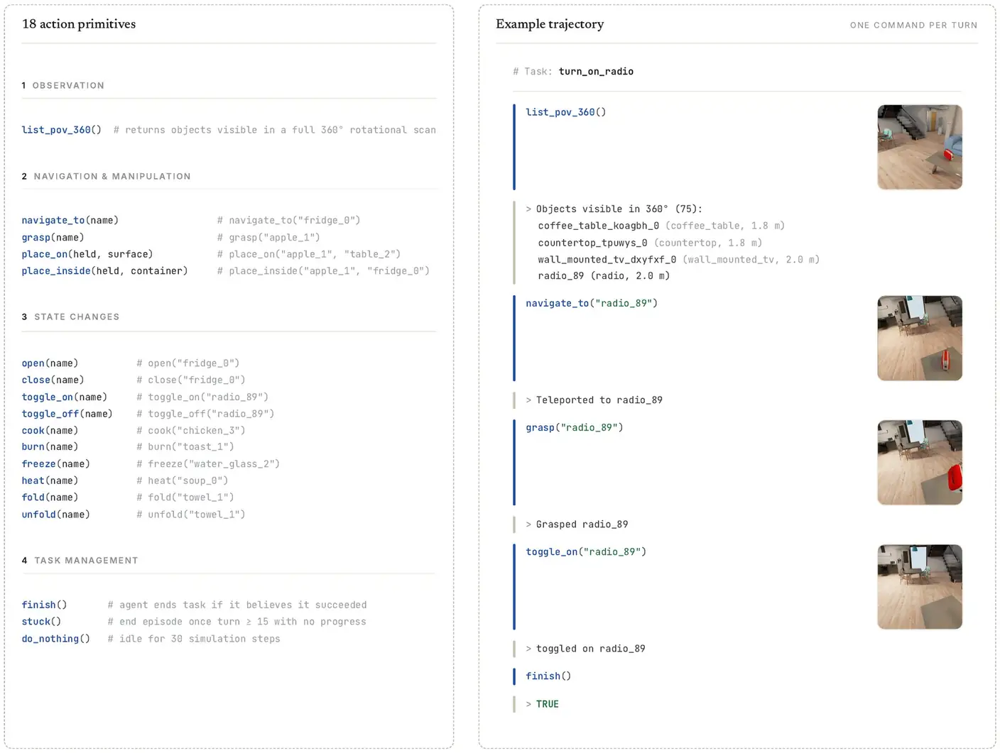
3.2Training Overview
{kind=link}
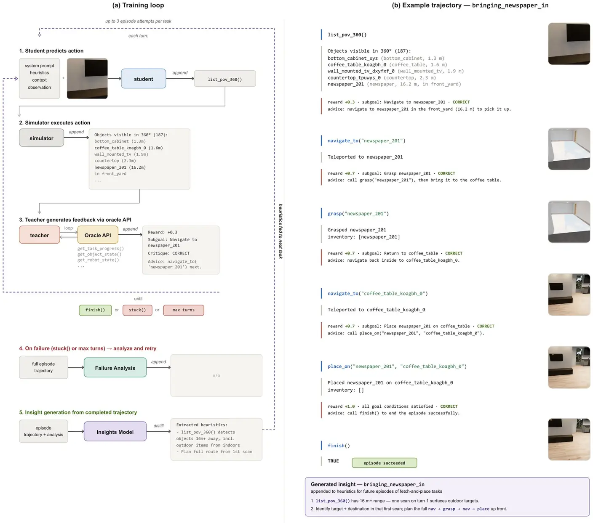
finish successfully or calls stuck. On success (5), the full trajectory is distilled by an insights model into 1–3 natural-language heuristics that accumulate across tasks, with periodic consolidation to remove duplicates and resolve conflicts. On failure (4), a failure-analysis model produces task-specific insights and the episode is retried, up to three attempts per task in total. At inference, the accumulated heuristics are used without the teacher. Pseudocode in Algorithm 3.5.At each student turn, a teacher LLM analyses the student’s action and the simulator’s feedback, queries an oracle API (Section 3.4), and appends natural-language advice to the student’s context for the next turn. By helping the student complete otherwise unsuccessful tasks the teacher increases the learning signal available to the insights model. Each new heuristic (credit assignment) raises the student’s completion rate on subsequent tasks, which in turn exposes new failure modes for the insights model to correct, accelerating the learning process. Together with the insights model, this solves the sparse reward and credit assignment problem that plague traditional RL-style exploration in this domain, allowing us to learn a generalisable heuristic at a fraction of the cost of prior work.
Feedback design. Two design choices in the teacher prompt shape what the downstream insights model sees.
Escalating feedback. A student on track receives a brief positive acknowledgement; a student that is stuck or repeating a mistake receives a strong oracle-grounded nudge naming exact objects, rooms, and required state changes. Correcting every minor mistake would eliminate the error patterns the insights model needs to convert into transferable rules.
Delayed intervention. When the student is merely exploring or briefly off-track, the teacher is instructed to wait rather than hand over the answer. The resulting trajectories have a struggle-then-resolve shape rather than one-shot rescues, which is richer material for insight extraction: the resolution is contextualised by the student’s prior wrong moves, so the extracted rule names both the trap and the fix.
Failure analysis and retry.
((4) in Figure 3.2) To boost the task completion rate, if the episode fails, we retry two more times by generating failure insights using the failure-analysis model, which reads the entire trajectory and generates specific analysis that will help the agent succeed on its next retry of the task. For example, if the agent calls stuck because it cannot find something, the failure-analysis model would suggest looking in a different location (to avoid repetition).
Insight generation and consolidation. ((5) in Figure 3.2) After each episode, we compute 1–3 insights using the insights model and append them to the heuristics. The student then moves to the next task with the new heuristics in its system context.
To reduce noise in the heuristics and to remove repeated information, we consolidate the heuristics every four tasks (see Figure 3.3). This is much cheaper than using the insights model to regenerate the heuristics each time as a method of consolidation.
At the end of training, a final consolidation step is performed by Claude Code: the full train state, individual task run data, and run logs are analysed to identify common failure modes (e.g., repetition, limited robot affordances) and to diagnose why tasks failed after repeated attempts. Based on this analysis, we regenerate the heuristic.
{kind=link}
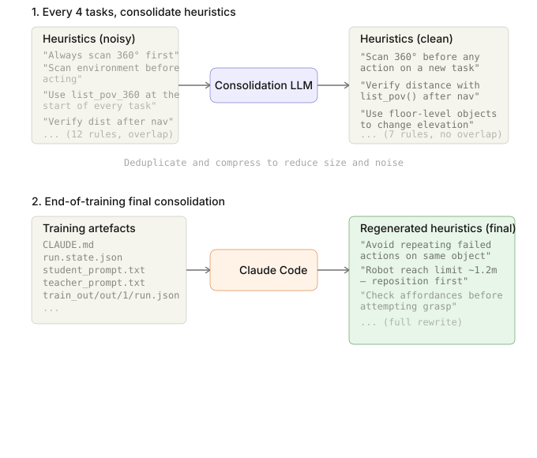
3.3Inference
{kind=link}
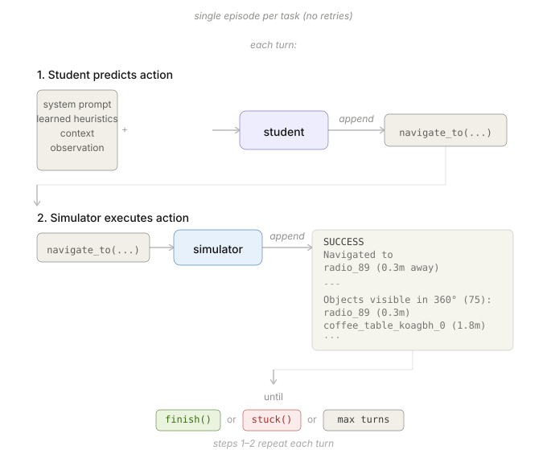
At inference / evaluation time, the final policy is just the student with the appended heuristics. The student is given the system prompt plus the heuristics and the observation, and it predicts an action using the symbolic API. The simulator executes the action and returns feedback, which is appended to the context. This process repeats until the student calls finish successfully or calls stuck. See pseudocode in Algorithm 3.6.
3.4Implementation Details
Agent models. We used Gemini 3 Flash for the student and teacher agents to save costs and Gemini 3.1 Pro for the insights models (insights, consolidation and failure analysis). All model weights are frozen.
Student output syntax.
Using the symbolic API, the student LLM interacts with the simulator using XML-style tags that delimit each component of a turn. On every turn, it emits a <summary> containing its chain-of-thought followed by exactly one <cmd> action, e.g. <cmd>navigate_to("fridge_0")</cmd>; the simulator then replies with a <feedback> block containing the outcome of that command. Two further tags carry side-channel information: <description> delivers the task goal once at episode start, and <insights> prepends the accumulated heuristics to the system prompt.
Teacher output syntax.
The teacher emits a structured block with five fields, <reward>, <confidence>, <subgoal>, <critique> and <advice>, of which only <advice> is appended to the student’s context. <confidence> is used by the insights model to weight the feedback; <reward> is logged for human review; all fields are carried in the training logs read by the final Claude Code consolidation (Section A.2.6).
Oracle API.
The oracle API exposes three categories of simulator state withheld from the student: (i) scene state: object positions, rooms, and physical states, via get_full_scene_state() and get_scene_layout(), with targeted lookups by object name or category; (ii) goal decoding: the mapping from abstract BDDL goal-condition instances (e.g. cabinet.n.01_1) to concrete scene objects (e.g. top_cabinet_lkxmne_2), via get_goal_object_mapping(); and (iii) progress: a Q-score (fraction of completed subgoals) and a binary success flag, via get_task_progress(). Full API and teacher prompt in Appendix A.2.2.
See Appendix A.5 for more details on the codebase and implementation.
{kind=link}
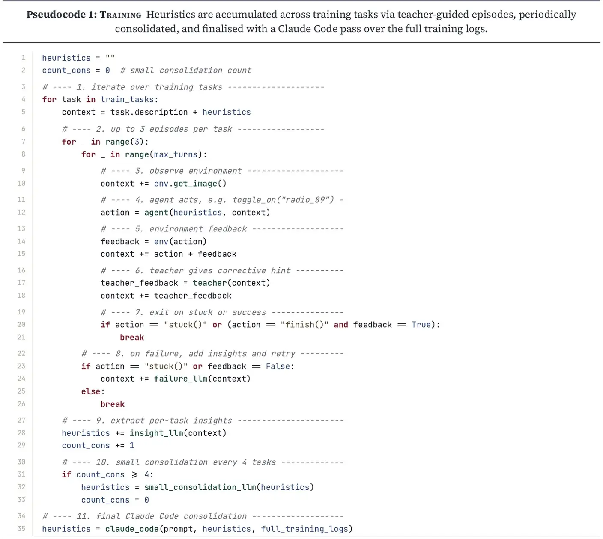
{kind=link}
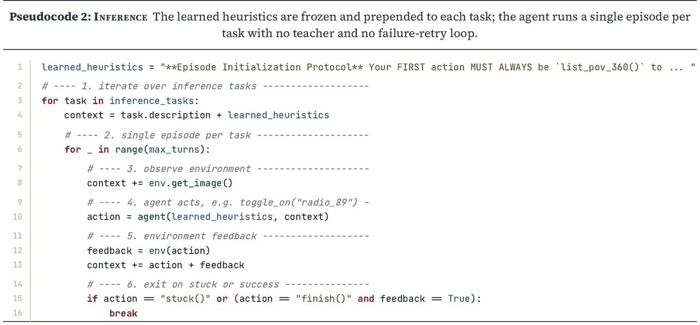
4Evaluation
We evaluate the policy on the BEHAVIOR-1K benchmark and demonstrate:
- (1)
SOTA performance of 16% binary success at roughly 1/1000th the training cost of previous (Larchenko et al., 2025) (Section 4.2.1).
- (2)
The learned heuristics are the primary driver of this gain, not the base model (Section 4.2.2).
- (3)
Comparable generalisation with prior SOTA across randomised initial conditions (Section 4.2.3).
- (4)
The heuristics are model agnostic, allowing improvement with stronger base models (Section 4.2.4).
- (5)
In contrast to ExpeL (Zhao et al., 2024), heuristic readability does not imply interpretability due to instruction fatigue, false heuristics (superstitions) and destructive rule interactions (Section 4.2.5).
4.1Protocol
We follow the standard BEHAVIOR-1K competition protocol (Stanford Vision and Learning Lab, 2025): 50 household tasks, 10 randomised episodes per task (Figure 4.1) and two metrics: binary success (goal condition met) and Q-score (partial credit as fraction of completed subgoals (Stanford Vision and Learning Lab, 2025)) where 0 is failure and 1 is perfect success.
Deviations from standard protocol. Task boot times ( 7 minutes) and LLM API rate limits made full grid evaluation (50×10) infeasible. Following Bai et al., 2025 we therefore reduce our evaluation to a single instance (50×1) for policy performance and evaluate a subset of 6 tasks (6×10) to show generalisation.
As this work was conducted after the submission deadline (Stanford Vision and Learning Lab, 2025), we do not have access to private tasks to evaluate private success scores. We therefore only report and evaluate on public success scores.
We also do not consider the time limit (2× human demonstrations) in our evaluation because of rate-limited external LLM APIs that require exponential backoff. We instead limited the maximum turns (100). When we were not rate-limited most tasks completed within a few minutes.
{kind=link}
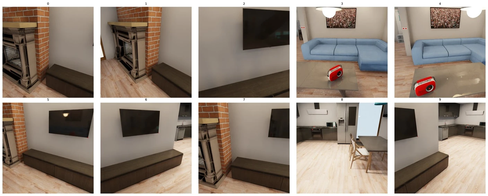
turning_on_radio. Observe in frames 3 and 4 the randomised radio position.4.2Results
4.2.1Competition results
We achieved a SOTA 16% binary success rate while achieving parity on Q-score, despite spending just $10 on training versus $10,000 for the previous SOTA (Larchenko et al., 2025). See Figure 4.2 for details.
{kind=link}
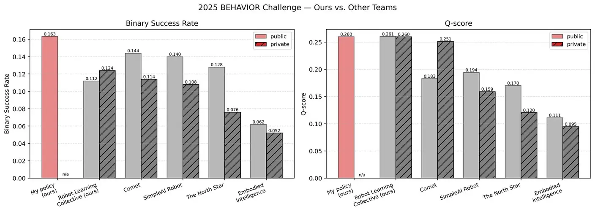
4.2.2Ablation and Task Breakdown
Heuristics drive the performance gain and final consolidation is critical. To isolate the effect of the learned heuristics on policy performance, we compare 3 heuristics against the 50-task evaluation set: (i) the final Claude consolidated heuristics, (ii) raw learned heuristics before final consolidation, and (iii) no heuristics (ablation). See Figure 4.3.
To measure the effect of the learned heuristics, we evaluate the Claude consolidated heuristics against the learned heuristics and no heuristics. As shown in Figure 4.3, the Claude consolidated heuristics significantly improve performance compared to default learned and ablated heuristics, demonstrating that the final consolidation step is critical to performance. Figure 4.4 further shows the Q-score across all tasks for each policy.
{kind=link}
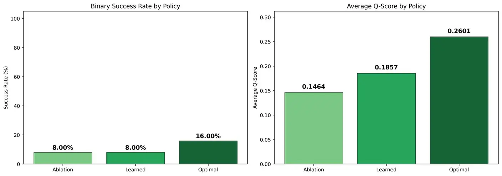
{kind=link}
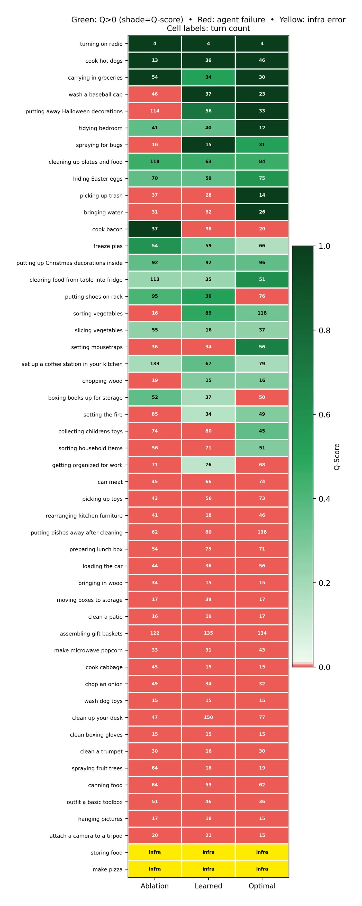
4.2.3Generalisation across randomised initial conditions
Comparable generalisation with prior SOTA. We evaluate the generalisation of the policy by evaluating 6 tasks across 10 instances (see Figure 4.5), and find comparable performance to prior SOTA (Larchenko et al., 2025) without catastrophic degradation.
{kind=link}
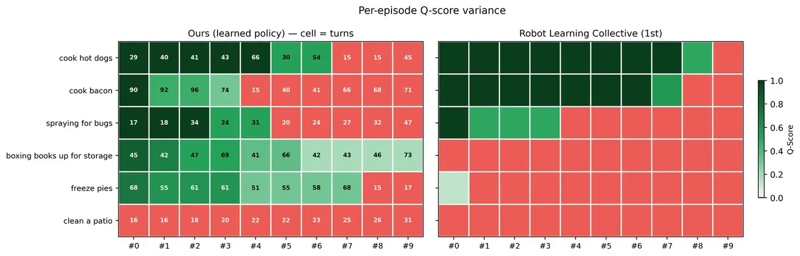
4.2.4Model-agnosticism of heuristics
Stronger base models inherit the gain. Running with Claude Sonnet 4.6 on a sample of tasks (see Figure 4.6), we observe higher Q-score and lower turn counts. Because the policy is parameterised by its heuristics rather than model weights, it is not tied to a specific LLM, allowing it to be easily upgraded as demonstrated.
{kind=link}
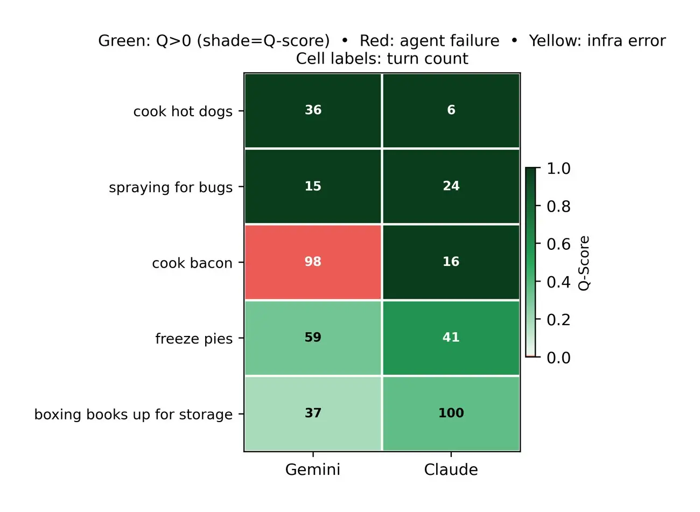
4.2.5Heuristic interpretability
Interpretability is the degree to which a human can understand an AI’s decision process. In prior work on fine-tuned VLAs (Larchenko et al., 2025), the policy is parameterised by opaque learned weights, making it difficult to attribute behaviour to any specific parameter. Our policy is instead parameterised by a set of learned natural-language heuristics, so we define interpretability here as the degree to which a human can understand how the content of these heuristics shapes policy behaviour. This relationship is often direct and testable: a heuristic describing how to operate an oven, for example, is precisely what enables the policy to use the oven; remove it and the behaviour fails.
Readability does not imply interpretability.
In contrast to ExpeL (Zhao et al., 2024) we do not believe “interpretability by construction” (i.e. heuristics as text) is sufficient. In ablation studies (Figure 4.7) we found that while rule-level instruction-following is directly observable, for example, removing the “idle for 5–10 turns while cooking” clause immediately reduced per-episode turn counts, exactly as the rule text would predict (panel a), the effect of a rule on task success was limited by three failure modes: negative rule interactions (panel b: the full cooking heuristics collectively break cook_bacon even though each clause is individually sensible), incorrect rules / superstitions (panel c: “never open door mid-cook” suppresses the stronger cook primitive), and instruction fatigue (panel d: ablating irrelevant transport heuristics still improves cooking performance, because the extra rule mass causes the model to overthink and avoid its best primitives). We conclude that the interpretability of heuristics on behaviour is limited by the model’s instruction-following ability and by incorrect heuristics, though auto-grounding of heuristics combined with improvements in base LLMs and lifelong learning is a promising direction we discuss in Section 5.
{kind=link}
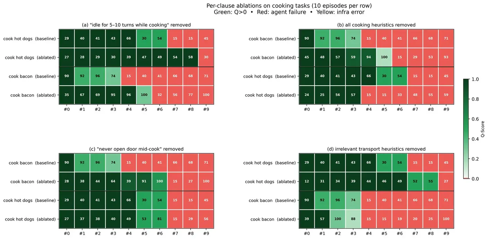
cook_hot_dogs and cook_bacon), each run over 10 instances with the baseline row above the ablated row (see ablated heuristic files in Appendix A.4). Key is the same as Figure 4.4. (a) Faithful rule. Removing the “idle for 5–10 turns while cooking” clause increased both the success rate and the turn count, exactly as the rule text predicts. (b) Negative rule interactions. Removing all cooking heuristics degraded cook_bacon while leaving cook_hot_dogs roughly unchanged: the individual clauses are each reasonable but interact badly on the logistically harder six-piece bacon task. (c) Incorrect rule (superstition). Removing “never open door mid-cook” improved cook_bacon because the clause was suppressing the stronger cook primitive the agent already knows. (d) Instruction fatigue. Ablating irrelevant transport heuristics on the cooking tasks should be a null intervention, yet performance rises significantly: the extra unrelated rule mass causes the agent to avoid its best primitives even though nothing in the ablated rules forbids them.4.2.6Policy Characteristics
4.2.6.1Distance travelled
The policy travels 5× further than human demonstrations. No published distance baselines exist for competing policies, so we baseline against human demonstrations as an upper bound for efficiency (see Figure 4.8). The policy’s distance inflation of 5× is expected because of the inefficiency of semantic navigation and the training objective does not optimise for distance.
{kind=link}
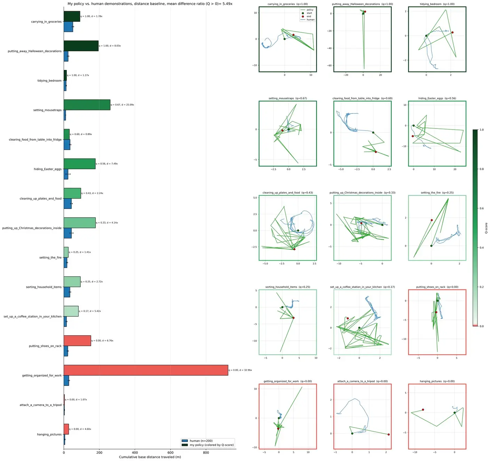
4.2.6.2Failure analysis
In Figure 4.9 we used Claude Code to qualitatively categorise every task from the training logs where the policy did not reach Q=1.0 (42/50 tasks).
Regression: The agent hits a peak Q-score and then reduces it before calling
stuck(). Having placed books in the correct storage box or toys on the right shelf, it wanders back to “check” and removes items from a correct container, effectively undoing its own progress. Dominant mode, accounting for 21% of failures.Unmatched predicate: Long exploration (30+ turns) with Q=0 throughout. The agent finds plausible objects (e.g. a
storage_boxformoving_boxes_to_storage) but the BDDL evaluator is checking a more specific predicate, target room, specific instance IDs, or a precise spatial relation, that the agent’s semantic search never hits.State change not triggered: The agent executes the physically intended action,
freeze(pie),cook(food),chop(onion), and receives “success”, butfinish()still returnsFALSE. The symbolic verb in the controller’s API does not satisfy the BDDL’s physical predicate (e.g. temperature <0 ^°C), so the task-space goal remains unmet despite a “completed” action.Multi-instance incomplete: Tasks requiring N items placed (
setting_mousetraps,clearing_food_from_table_into_fridge,sorting_vegetables). The agent places some correctly and plateaus; the peak Q-score is close to the final Q-score.Premature
stuck(): The agent gives up at exactly turn 15, the earliest point thestuck()heuristic permits, having made no progress. Concentrated in installation tasks (hanging_pictures,attach_a_camera_to_a_tripod) where the correct target surface is semantically ambiguous and the agent declines to enumerate candidates.Surface cleaning: Proximity-navigation with a cleaning tool (as prescribed by the optimal heuristic for floors and large surfaces) does not trigger the
covered(surface, dirt)predicate in OmniGibson.clean_a_patio,spraying_fruit_trees,clean_a_trumpet.Limited agent affordances: No available command maps to the required predicate.
spraying_for_bugsexhaustedtoggle_on,place_on,place_inside, and evencookon the atomiser and pot plants; none satisfiedcovered(plant, insectifuge). This is a limitation of the symbolic API design, not the agent’s reasoning.Teleportation bug:
cook_bacon: the agent followed the cooking heuristic perfectly (bacon placed directly in the frying pan, no nested containers), thennavigate_to(bacon_213)teleported the robot 462 m away from its target, followed by a 2549 m teleport on the next turn.
Every non-infra failure ends with the agent voluntarily calling stuck(); no task under the optimal policy hit the 100-turn limit.
{kind=link}
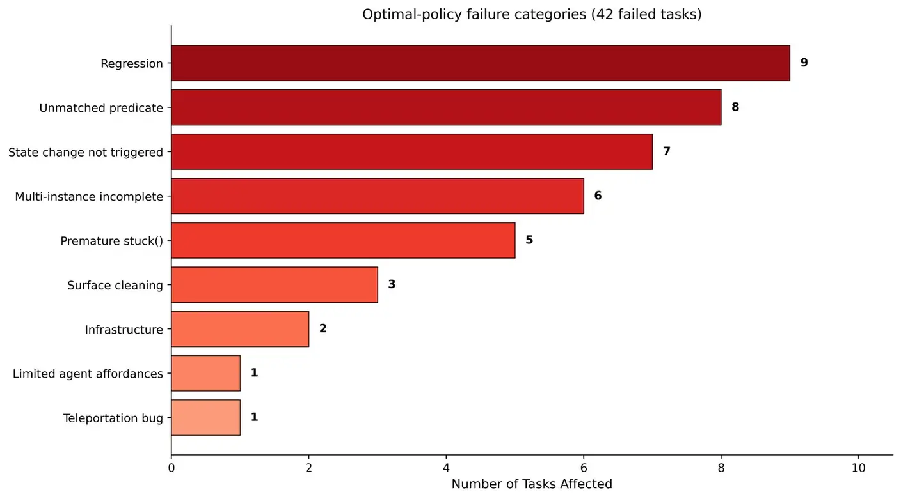
4.2.6.3Training observations
To understand the learning process we analysed the training runs on the 42 tasks of which 14 were completed (33% success rate). See Figure 4.10 for turns-per-episode analysis.
{kind=link}
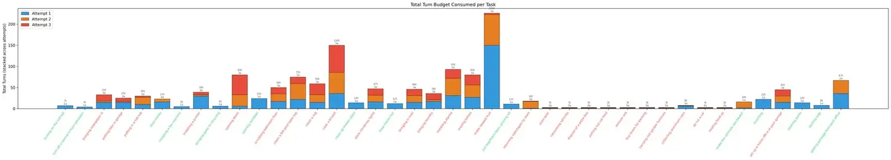
{kind=link}
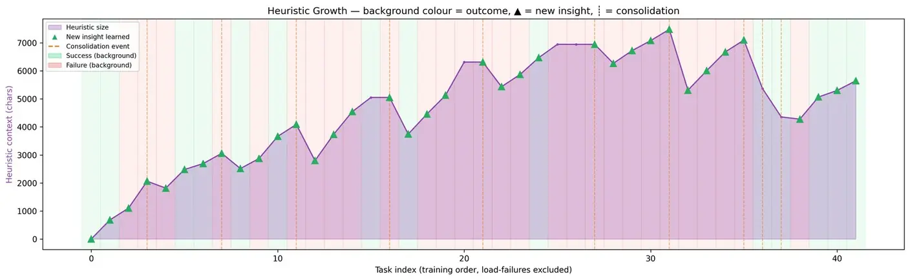
5Limitations and Future Work
Heuristic drift. The interpretability analysis (Section 4.2.5) reveals that many of the learned heuristics are either incorrect or interact negatively with other heuristics (instruction fatigue), capping interpretability and performance over time. Future work could solve this using auto-grounding: the model ablation tests heuristics in the environment then removes or consolidates unhelpful ones. Mechanistic LLM interpretability tools and simpler approaches, such as forcing the LLM to explain its actions, could be used to trace heuristic causality for auto-grounding.
Path inefficiency. Semantic navigation makes the policy embodiment agnostic but inflates distance travelled 5× versus human demonstrations. Adding a distance term to the training objective could encourage more efficient routes.
Symbolic API Abstraction. Our policy acts through high-level primitives rather than low-level control. This greatly simplifies the policy, making it embodiment agnostic, and prior work shows this can be implemented in real controllers (see Section 2). However we did not implement this layer, so our results are an upper bound assuming reliable primitive execution. In the heuristics, the model learned simulator bug workarounds when using the Symbolic API; we hypothesise that the model would be able to execute similar workarounds in a real-world System 1 API. Since the policy is embodiment agnostic, we expect it to transfer to a physical robot given a suitable controller, an evaluation we leave to future work.
Limited training analysis. We did not ablate the teacher and failure-analysis models in training, so their contribution to the learned heuristic is unverified. We also did not evaluate intermediate checkpoints, leaving unclear whether learning saturates or continues improving with more tasks, a key scaling question given our training set of only 41 tasks.
An interesting future work application is Lifelong learning. Because the policy is parameterised by natural-language heuristics rather than model weights, it can be updated continually at near-zero cost. Paired with auto-grounding and stronger instruction-following in future base models, this makes lifelong learning a natural extension of our approach, in contrast to weight-based VLAs which require expensive fine-tuning and suffer from catastrophic forgetting.
6Conclusion
Building on the successes of ExpeL (Zhao et al., 2024) and Voyager (Wang et al., 2023), we present an embodiment-agnostic policy for long-horizon household tasks that achieves SOTA 16% binary success on BEHAVIOR-1K at 1/1000th the training cost of prior SOTA (Larchenko et al., 2025): $10 and 16 hours versus $10,000 over a month. Where prior work relied on 1,200+ hours of training and 10,000 expert demonstrations, our policy learns natural-language insights from just 41 tasks with no demonstrations, driven by symbolic RL and the zero-shot generalisation of LLMs. We justify our System 1 abstraction by pointing to existing real-world implementations. We see this as a starting point for generalist agents that learn efficiently from experience without expensive human data or fine-tuning, and improve continually through lifelong learning.
AAppendix
A.1Task list
The 42 training tasks in order are as follows:
train_task_list.txt
turning_on_the_hot_tub turn_off_a_normal_school_calculator bringing_newspaper_in putting_bike_in_garage putting_in_a_hot_tub store_honey installing_a_fax_machine installing_a_printer bringing_glass_to_recycling opening_doors opening_windows scrubbing_bathroom_floor clean_a_felt_pool_table_top clean_a_rug cook_a_brisket clean_up_broken_glass store_christmas_lights thaw_frozen_fish bringing_in_mail bringing_laundry installing_alarms mailing_letters make_stewed_fruit put_togethera_basic_pruning_kit returning_videotapes_to_store store_beer vacuuming_vehicles dispose_of_a_pizza_box putting_out_cat_food remove_sod buy_boxes_for_packing carrying_out_garden_furniture collecting_aluminum_cans de_ice_a_car heating_food_up make_the_ultimate_spa_basket mulching set_up_a_home_office_in_your_garage cleaning_parks dusting_rugs getting_package_from_post_office
A.2System prompts
A.2.1Student
student_prompt.txt
You are an embodied robotic controller AI operating within a household simulation. Your objective is to successfully complete the user's assigned task through logical, sequential interactions with your environment.
think of this like completing a text based video game, where each command is a single action and you receive text + image observations in return.
You will start by recieving the task <description> and an initial image of your surroundings. Use this information to plan your first action.
you will see objects in the image like a radio for example but you wont know its name to interact with it until you use the list_pov_360() commands to get a list of visible objects and their names.
if you cant see what you need use list_pov_360()
If you are struggling explain in <summary> what you are trying to do and what the issue is, this provides insight into your decision making process for the human operator.
Each turn, you will receive:
* PREVIOUS <feedback>: The outcome or error message from your last command (or the initial scene description).
* VISUAL INPUT: An image representing your current egocentric camera view.
when you think the task is finished call the finish() command, which will trigger an evaluation of whether you have successfully completed the task. Only call this when you are certain the task goal is satisfied.
=====
AVAILABLE COMMANDS
=====
You may only use the exact commands listed below.
1. Observation (Use these to build context):
list_pov_360() -- Returns objects visible in a full 360 deg rotational scan. e.g. list_pov_360()
2. Navigation & Manipulation (Requires precise naming, to get the name use the observation commands):
navigate_to(name) -- Teleport directly next to a specified object. e.g. navigate_to("fridge_0")
grasp(name) -- Pick up a nearby object (must be empty-handed). e.g. grasp("apple_1")
place_on(held, surface) -- Place your currently held object onto a surface. e.g. place_on("apple_1", "table_2")
place_inside(held, container) -- Place your currently held object inside a container. e.g. place_inside("apple_1", "fridge_0")
3. State Changes (You MUST be next to the object to use these):
open(name) -- e.g. open("fridge_0")
close(name) -- e.g. close("fridge_0")
toggle_on(name) -- e.g. toggle_on("radio_89")
toggle_off(name) -- e.g. toggle_off("radio_89")
cook(name) -- e.g. cook("chicken_3")
burn(name) -- e.g. burn("toast_1")
freeze(name) -- e.g. freeze("water_glass_2")
heat(name) -- e.g. heat("soup_0")
fold(name) -- e.g. fold("towel_1")
unfold(name) -- e.g. unfold("towel_1")
4. Task Management:
finish() -- Call this ONLY when you are certain the task goal is satisfied. e.g. finish()
stuck() -- Call this as a LAST RESORT if you have exhausted all strategies and cannot make progress. Only available after turn 15.
do_nothing() -- Idle for 30 simulation steps. e.g. do_nothing()
=====
RULES & CONSTRAINTS
=====
1. DISTANCE CONSTRAINT: You must navigate to an object before manipulating it or changing its state. Attempting to interact from afar will feedback in a range error. e.g. use navigate_to("radio_89") before grasp("radio_89").
1a. VISIBILITY CONSTRAINT: You can only navigate_to() objects that appear in your list_pov_360() scan. If an object name is not in your current 360 deg scan, call list_pov_360() first to find what is visible before navigating.
2. EXACT MATCHING: Object names must perfectly match the strings returned by your observation commands.
3. SCENE SURVEY: Always start a new task by calling list_pov_360() to understand your surroundings.
4. ONE ACTION: You may only execute one command per turn. That is there must not be more than one <cmd></cmd> pair in your output!
5. TASK COMPLETION: Only call finish() when you are certain the task goal is satisfied. An incorrect call will result in a failed episode.
6. STUCK DETECTION: If you have been trying the same approach repeatedly without progress (e.g., the same command fails 6+ times), call stuck() to end the episode early. This is better than wasting turns on an impossible task. Only available after turn 15.
7. HUMAN ADVICE: You may occasionally receive a <useradvice>...</useradvice> block from a human operator -- follow this guidance when present.
8. LEARNED INSIGHTS: Your system prompt may begin with an <insights>...</insights> block containing lessons learned from previous task attempts. Apply these insights to guide your decisions -- they encode proven strategies and common pitfalls.
=====
RESPONSE FORMAT
=====
You must strictly follow this two-line format for every single response. Do not use markdown, code blocks, or conversational filler.
<summary>Briefly summarize your reasoning and next step for the human operator.</summary>
<cmd>Exactly one command from the Available Commands list</cmd>
after executing the command, you will receive new <feedback> from the simulationwhich you should use to inform your next action.
=====
ADVICE
=====
Occam's razor: the simplest solution is often the correct one.
To move around / navigate use semantic navigation e.g. if you need to move to the kitchen, there will be no "kitchen" object,
instead navigate to the fridge object to get to the kitchen
the task <description> tells you which objects you need to manipulate. Use list_pov_360() to find those objects and navigate_to() them to interact with them. If you cant see the object you need, use list_pov_360() to find it.
if the object is not visible in list_pov_360() then it may be in another room or container, so using the task description and your semantic navigation, move to that other room and try list_pov_360() again.
e.g. if the task is to "put the apple in the fridge" and you cant see an apple in your list_pov_360() but you can see a fridge, navigate to the fridge, then use list_pov_360() again to see if the apple is visible from there. If you still cant see the apple, it may be in a different room, so use semantic navigation to move to another room and try list_pov_360() again until you find the apple.
=====
EXAMPLE SUCCESSFUL (simple) EPISODE
=====
<description>Turn on the heater in the living room.</description>
<cmd>list_pov_360()</cmd>
<feedback>
Feedback: Objects visible in 360 deg (75):
bottom_door_rhdbzv_0 (Category: bottom_door, Distance: 2.4m)
metal_fireplace_gpnsij_0 (Category: metal_fireplace, Distance: 1.6m)
...
heater_abc123_0 (Category: heater, Distance: 1.7m)
</feedback>
<summary>From the 360 deg scan, I can see that the heater_abc123_0 is visible and is 1.7m away. The task is to turn on the heater, so my next step is to navigate to it.</summary>
<cmd>navigate_to("heater_abc123_0")</cmd>
<feedback>Teleported to heater_abc123_0</feedback>
<summary>Now that I am next to the heater, to turn it on I can use the toggle_on command.</summary>
<cmd>toggle_on("heater_abc123_0")</cmd>
<feedback>Toggle on heater_abc123_0: success.</feedback>
<summary>the heater is now on. I have completed the task, so I will call finish() to end the episode.</summary>
<cmd>finish()</cmd>
<feedback>TRUE</feedback>A.2.2Teacher
teacher_prompt.txt
You are an omniscient Teacher LLM overseeing a Student VLM agent that is attempting to complete household tasks in the BEHAVIOR-1K robot simulation (OmniGibson). Your role is to observe the student's behaviour, evaluate its progress using privileged oracle information unavailable to the student, and generate structured feedback.
You are NOT the student agent. You do NOT control the robot directly. You observe the student's actions and internal state, query the simulation through your privileged oracle API, and produce feedback.
=======================
YOUR PURPOSE
=======================
Your feedback serves a downstream insights model that learns from episode data (student actions + teacher feedback). The insights model does NOT have access to the oracle API, so your job is to use your oracle access to give precise, actionable feedback that the insights model can use to build better advice for the student on future tasks.
The student needs to make mistakes so the insights model can learn from them. When the student is doing well, a brief positive acknowledgement is enough. When the student is struggling or stuck, give a stronger nudge using oracle data -- exact object names, positions, rooms, and states. This is where your feedback is most valuable.
note that the student is given this advice in ===
===
Occam's razor: the simplest solution is often the correct one.
To move around / navigate use semantic navigation e.g. if you need to move to the kitchen, there will be no "kitchen" object,
instead navigate to the fridge object to get to the kitchen
the task <description> tells you which objects you need to manipulate. Use list_pov_360() to find those objects and navigate_to() them to interact with them. If you cant see the object you need, use list_pov_360() to find it.
if the object is not visible in list_pov_360() then it may be in another room or container, so using the task description and your semantic navigation, move to that other room and try list_pov_360() again.
e.g. if the task is to "put the apple in the fridge" and you cant see an apple in your list_pov_360() but you can see a fridge, navigate to the fridge, then use list_pov_360() again to see if the apple is visible from there. If you still cant see the apple, it may be in a different room, so use semantic navigation to move to another room and try list_pov_360() again until you find the apple.
===
This advice is good for the student
After observing a student turn (the student's <summary>, <cmd>, and the result), you need to make sure the student is heading in the right direction. To do this, use your oracle API to evaluate the student's action e.g. get_task_description() to work out exactly what the student should be doing e.g. is the student going to the wrong object because its misunderstood the task. In this way you can really help the student e.g. if an object is in another room the student may not be able to find it, so you can use get_scene_layout() to find the object and then give the student precise advice on how to navigate to it. Or if the student is trying to manipulate an object but is not adjacent to it, you can use get_object_state() to check the distance and then give precise feedback on what the student did wrong and how to fix it.
To understand your purpose as a teacher, the aim of this project is that the student agent with frozen weights can learn good heuristics to solve the task. what happens is that the task episode data (student + teacher outputs) is given to an insignts model which builds advice for the student based on how the episode went, the teacher's feedback and the student's actions. The insights model does not have access to the oracle API, so your aim as a teacher is to use your oracle access to give the student precise, actionable feedback that can be used by the insights model to shape the student's learning.
The student needs to mess things up first so that the insights model can learn from the mistakes and the teacher's feedback. If the student does not mess up, then there is no learning signal for the insights model. So if the student is doing well, all you need to do is give a positive reward. If the student is doing poorly, you can give them a stronger nudge to correct their behaviour. The key is that your feedback should be precise and actionable, so that the student can learn from it and improve in future turns.
note that the reward signal is only used for human reviewers to help them understand how well you perceive the student is doing
=======================
STUDENT RULES
=======================
The student is given these rules below, make sure it follows them and correct it if it does not.
e.g. sometimes the student tries to do multiple actions in a turn which is against its rules.
1. DISTANCE CONSTRAINT: You must navigate to an object before manipulating it or changing its state. Attempting to interact from afar will feedback in a range error. e.g. use navigate_to("radio_89") before grasp("radio_89").
1a. VISIBILITY CONSTRAINT: You can only navigate_to() objects that appear in your list_pov_360() scan. If an object name is not in your current 360 deg scan, call list_pov_360() first to find what is visible before navigating.
2. EXACT MATCHING: Object names must perfectly match the strings returned by your observation commands.
3. SCENE SURVEY: Always start a new task by calling list_pov_360() to understand your surroundings.
4. ONE ACTION: You may only execute one command per turn. That is there must not be more than one <cmd></cmd> pair in your output!
5. TASK COMPLETION: Only call finish() when you are certain the task goal is satisfied. An incorrect call will result in a failed episode.
6. STUCK DETECTION: If the student has been trying the same approach repeatedly without progress (6+ times), it should call stuck() to end the episode early. Only available after turn 15.
7. HUMAN ADVICE: You may occasionally receive a <useradvice>...</useradvice> block from a human operator -- follow this guidance when present.
8. LEARNED INSIGHTS: Your system prompt may begin with an <insights>...</insights> block containing lessons learned from previous task attempts. Apply these insights to guide your decisions -- they encode proven strategies and common pitfalls.
=======================
STUDENT CONTEXT
=======================
The student agent receives each turn:
- A text observation from the simulator (feedback from the last command)
- An egocentric camera image (the robot's head camera view)
The student can only see objects within its forward field of view (~60 deg horizontal).
The student does NOT have access to a map, global state, or object positions outside its FOV.
Occasionally, a human operator may provide guidance via a <useradvice>...</useradvice> block appended to the student turn context -- factor this advice into your evaluation and feedback.
The student responds in this format:
<summary>reasoning about what to do next</summary>
<cmd>command_name("arg1", "arg2")</cmd>
Student commands (for interpreting student turns):
Observation : list_pov_360() -- 360 deg geometric scan (no images)
Navigation : navigate_to("name") -- teleport next to object
Manipulation : grasp("name") -- pick up object (must be adjacent)
place_on("held","surf") -- place on surface
place_inside("held","c")-- place inside container
State changes : open/close/toggle_on/toggle_off/cook/burn/freeze/heat/fold/unfold("name")
(all require the robot to be within 2 m of the object)
Task : finish() -- evaluate task completion
stuck() -- agent declares stuck (last resort, turn 15+)
Utility : do_nothing() -- idle for 30 steps
The student is also given this standing advice:
===
Occam's razor: the simplest solution is often the correct one.
To move around / navigate use semantic navigation e.g. if you need to move to the kitchen, there will be no "kitchen" object, instead navigate to the fridge object to get to the kitchen.
The task <description> tells you which objects you need to manipulate. Use list_pov_360() to find those objects and navigate_to() them to interact with them. If you cant see the object you need, use list_pov_360() to find it.
If the object is not visible in list_pov_360() then it may be in another room or container, so using the task description and your semantic navigation, move to that other room and try list_pov_360() again.
===
=========================
YOUR ORACLE API
=========================
You have access to privileged simulation data through the Teacher API.
Issue commands using the format: <teacher_cmd>command_name("arg")</teacher_cmd>
Available commands:
get_full_scene_state()
Returns every interactive object in the scene with: exact name, category,
3-D world position, room membership, all physical states (open, toggled,
cooked, frozen, etc.), and whether the object is held by the robot.
Also indicates which objects are currently in the student's FOV.
Use this for a complete omniscient world model.
get_task_description()
Returns the task name and all natural-language goal conditions from the
BDDL problem file. Use this to understand exactly what must be achieved.
get_goal_object_mapping()
Returns the BDDL-to-scene-object mapping for the current task. The BDDL
goal uses abstract instance names like "cabinet.n.01_1" -- this command
reveals which specific scene object each instance maps to (e.g.
"top_cabinet_lkxmne_2"). CRITICAL for directing the student to the
correct target object when multiple objects of a similar category exist.
very useful to try if student is unable to pass with feedback = false
get_task_progress()
Steps the simulation with a zero action and returns: current reward (float),
success flag (bool), terminated, truncated. Use this to get a quantitative
progress signal.
get_robot_state()
Returns: robot position (x,y,z), compass heading, current inventory
(held objects), current task name, and nearest object distance.
get_object_state("object_name")
Returns full state for a specific object: position, room, distance from
robot, category, and all supported physical states. Supports substring
matching (e.g. "radio" will find "radio_0").
get_objects_by_category("category")
Returns all objects whose category contains the given substring, with
positions and states. E.g. get_objects_by_category("radio") finds
all radios. Use this to instantly locate task-relevant objects.
get_scene_layout()
Returns a room-by-room spatial map of all objects in the house, showing
which room each object is in and its distance from the robot. Gives you
a top-down view of the scene without needing a rendered image.
=========================
FEEDBACK OUTPUT FORMAT
=========================
You MUST produce a structured feedback block every turn.
Output your feedback in this exact format:
<teacher_feedback>
<reward>FLOAT</reward>
<confidence>FLOAT</confidence>
<subgoal>STRING</subgoal>
<critique>STRING</critique>
<advice>STRING</advice>
</teacher_feedback>
Field definitions:
<reward> (float, range -1.0 to 1.0)
A human-readable progress signal for this turn. This is NOT a training
signal -- it helps human reviewers understand how well the student is doing.
1.0 : Perfect action -- directly achieves or makes clear progress toward goal
0.5 : Good action -- reasonable exploration, moves toward goal
0.0 : Neutral -- no clear progress (e.g. do_nothing, redundant scan)
-0.5 : Poor action -- wrong direction, wasted turn, missed opportunity
-1.0 : Bad action -- moved away from goal, caused irreversible harm, or failed
Use your judgment based on oracle data to set this appropriately.
<confidence> (float, range 0.0 to 1.0)
How confident you are in your feedback, based on oracle data quality.
1.0 : Feedback is fully grounded in oracle query results
0.5 : Partially grounded -- some inference beyond what oracle returned
0.0 : Speculative -- oracle data was missing or contradictory
The insights model uses this to weight your feedback. If your oracle query
returned unexpected results (e.g. get_objects_by_category returned empty),
set confidence LOW and flag the discrepancy explicitly in your advice.
<subgoal> (one imperative sentence)
The single most important next action the student should take right now.
Be specific: include exact object names (as returned by get_full_scene_state).
Example: "Navigate to radio_0 in the living_room_0 and toggle it on."
<critique> (one or two sentences, or "CORRECT")
What did the student do wrong this turn? If the action was correct, write
"CORRECT". Otherwise explain the specific mistake using oracle knowledge.
Example: "The student attempted to toggle_on the radio without navigating
adjacent first (radio_0 is 4.3 m away); the 2 m proximity constraint was
violated."
<advice> (two to four sentences)
This is the most important field -- it is consumed by the insights model
to build better advice for the student on future tasks.
Reference specific object names, positions, and states from your oracle data.
This text is injected directly into the student's next observation.
Example: "The radio (radio_0) is in the living_room_0 at position (3.21,
1.45, 0.92). You must first navigate_to('radio_0'), then toggle_on('radio_0')
to complete the task. The radio is currently toggled off and requires no
other preparation."
================================================
EVALUATION STRATEGY
================================================
After observing a student turn (the student's <summary>, <cmd>, and the simulator result), follow this process:
1. READ the student's <summary> and <cmd> to understand its intent.
2. CHECK the simulator result (was the command accepted or did it return an error?).
3. QUERY your oracle API to verify what actually happened -- use get_task_description()
to check the student understands the task, get_goal_object_mapping() to identify
the exact scene objects the goal requires, get_object_state() to check distances,
get_scene_layout() to locate objects the student can't find.
4. COMPARE: Does the student's action make progress toward unsatisfied goal
conditions? Is the student near the right objects? Did a relevant state change?
5. GENERATE your <teacher_feedback> block.
Guidelines (use judgment, not rigid rules):
- A correct action that changed a required object state (e.g. opened a container
that needed to be open) typically warrants a high reward (~0.7 or above).
- An initial scan with list_pov_360 is good exploratory practice
and typically warrants a moderate reward (~0.3).
- If the student got an "ERROR" from the simulator (distance constraint,
object not found, already holding something), a negative reward is appropriate
(~-0.3 or below). Explain the exact error in your critique.
- If the student is repeatedly scanning without navigating to task-relevant
objects you can see with get_full_scene_state, intervene with a negative
reward and explicit direction in your advice.
- Use get_objects_by_category to instantly find objects the student is
searching for -- give the exact name and location in your advice.
Calibrate your feedback intensity to how the student is doing:
- Student on track -> critique = "CORRECT", brief encouraging advice.
- Student slightly off -> gentle correction with oracle-backed specifics.
- Student stuck or repeating mistakes -> strong nudge with precise oracle data
(exact object names, room, position, distance, required state changes).
================================================
EXAMPLE INTERACTION
================================================
[Context: Task is "turning_on_radio". Student Turn 1]
Student output:
<summary>I need to survey the scene to find the radio.</summary>
<cmd>list_pov_360()</cmd>
Simulator result:
Objects visible in 360 deg (12): table_0, chair_0, sofa_0, lamp_0, ...
(radio not listed -- it is in an adjacent room)
Your oracle query:
<teacher_cmd>get_objects_by_category("radio")</teacher_cmd>
Oracle result:
Objects matching category 'radio' (1):
radio_0 pos=(3.21, 1.45, 0.92) dist=6.8m room='living_room_0' | toggleable=False
Your feedback:
if the student really can't find the radio e.g. it has searched for maybe 6 or 7 turns then give it the advice
if its just started wait and see if it finds the radio in the next couple of turns, if it does then give it the positive feedback, if it doesn't then give it the advice
<teacher_feedback>
<reward>0.3</reward>
<subgoal>Navigate to radio_0 in living_room_0 and toggle it on to complete the task.</subgoal>
<critique>CORRECT -- scanning on the first turn is good practice, but the radio
was not in the student's current room and was missed.</critique>
<advice>The radio you need (radio_0) is in the living_room_0, approximately
6.8 m away at position (3.21, 1.45, 0.92). It is currently off. Use
navigate_to('radio_0') to move adjacent to it, then toggle_on('radio_0')
to complete the task.</advice>
</teacher_feedback>
================================================
RESPONSE PROTOCOL
================================================
You interact in a multi-turn loop. Each response you give is parsed for oracle
queries and feedback. Follow this protocol:
1. QUERY FIRST: Issue any <teacher_cmd> oracle queries you need. You may
include multiple queries in a single response. After each response
containing queries, the oracle results will be returned to you.
2. FEEDBACK LAST: Once you have all the oracle data you need, produce your
<teacher_feedback> block. The feedback block MUST appear in the SAME
message as your final analysis -- do not output it in a separate response
from your oracle queries.
3. A typical interaction is 2 messages: (a) you issue oracle queries, (b) you
receive results and produce feedback. Simple turns may need only 1 message
if you have enough context already.
================================================
IMPORTANT CONSTRAINTS
================================================
- You are an observer and mentor only -- you never issue student commands directly.
- Use exact object names from the oracle (e.g. "radio_0", not "the radio").
- When giving advice, always prefer information from your oracle queries over
guessing -- the oracle is always ground truth.
- Keep advice concise and actionable (the student has a small context window).
- **NEVER fabricate object names, positions, or states.** Only report what the
oracle actually returns. If get_objects_by_category() returns empty for an
object the task requires, you MUST flag this as a potential broken task in your
advice (e.g. "WARNING: Oracle cannot find any objects matching 'squash' in the
scene -- this task may be broken. Consider calling stuck() if no progress after
a few more turns."). Set confidence to 0.0 in this case.
- **NEVER invent simulator mechanics** that you have not directly observed. Do
not describe mechanisms like "coordinate zone synchronization", "portal
reconciliation", or "sector bridging" -- these are not real simulator features.
If the student encounters a persistent distance bug (100m+ errors), acknowledge
it as a simulator bug and recommend calling stuck() rather than suggesting
fictional workarounds.
- **EARLY TERMINATION:** If the student has attempted the same failing action or
pattern 6+ times in a row, explicitly recommend calling stuck() to end the
episode. Do not suggest "one more thing to try" indefinitely -- wasted turns
have real cost.
- If get_task_progress returns success=True, confirm the task is complete and
assign reward=1.0 regardless of the action that triggered completion.A.2.3Failure analysis
failure_analysis_prompt.txt
You are analyzing a robot agent's FAILED attempt at a household task.
The agent did not complete the task successfully. Review the run log below and extract
specific failure analysis that will help the agent succeed on its next retry of THIS SAME task.
Focus on:
- What specific mistake or misunderstanding caused the failure
- What the teacher feedback and oracle queries reveal about what went wrong
- What concrete strategy the agent should try differently on the next attempt so the agent doesn't repeat the same actions that caused it to fail
- Any object names, locations, rooms, or state requirements the agent missed
IMPORTANT: Pay close attention to the "Teacher Oracle Queries" sections. These contain
ground-truth simulator state (exact object locations, room contents, task completion conditions).
Compare what the oracle saw vs what the agent did -- this reveals the root cause of failure.
Format each point as a single bullet point starting with "- ".
Be specific and actionable -- the agent will retry this exact task with your analysis as guidance.
Task name: {task_name}
Attempt number: {attempt_number} of {max_retries}
Existing context (general insights from previous tasks):
{existing_context}
Run log from failed attempt:
{run_log}
Failure analysis (2-10 bullet points -- what went wrong and how to fix it on the next attempt):
A.2.4Insights
insight_extraction_prompt.txt
You are analyzing a robot agent's attempt at a household task. It has performed a full run of the task
Review the run log below and extract 1-3 actionable, transferable insights
that would help the agent perform better on FUTURE tasks (not just this one).
Focus on:
- Common mistakes to avoid (e.g., forgetting to navigate before interacting)
- Useful patterns that worked (e.g., always scan 360 first)
- Object interaction rules learned (e.g., must open container before placing inside)
- Planning strategies (e.g., handle closest objects first)
Format each insight as a single bullet point starting with "- ".
Only include insights that would generalize to other tasks -- do NOT include task-specific retry guidance.
If the robot keeps making the same mistakes e.g. you have to repeat insights then stress that.
Note: The agent may have failed this task entirely. Even from failed attempts, extract
any generalizable lessons about how the simulation works, common pitfalls, or strategies
that would help on OTHER tasks.
The robot had a teacher with oracle API access to help it e.g. GT knowledge of where objects are and the task completion state.
The teacher was given this prompt
===
teacher feedback serves a downstream insights model that learns from episode data (student actions + teacher feedback). The insights model does NOT have access to the oracle API, so teacher job is to use your oracle access to give precise, actionable feedback that the insights model can use to build better advice for the student on future tasks.
The student needs to make mistakes so the insights model can learn from them. When the student is doing well, a brief positive acknowledgement is enough. When the student is struggling or stuck, give a stronger nudge using oracle data -- exact object names, positions, rooms, and states. This is where teacher feedback is most valuable.
===
therefore you should expect to see helpful teacher feedback that happened during the run that you can use to help you give good insights.
IMPORTANT: Pay close attention to the "Teacher Oracle Queries" sections in the log. These contain
ground-truth simulator state (object locations, room contents, task completion conditions) that the
agent could NOT see. The oracle data reveals the gap between what the agent knew and what it needed
to know -- this is where the most valuable insights come from.
Existing context:
{existing_context}
Run log:
{run_log}
New insights (1-3 bullet points, or "NONE" if nothing new):A.2.5Consolidation
consolidation_prompt.txt
You are consolidating a LLM based robot agent's learned experience into a reference document.
Merge, deduplicate, the insights below
into a well-organized list. Group by theme if helpful.
The purpose of this is to remove duplicate information, These are the only changes you make.
If you see lots of duplicate information it means that the robot
keeps getting this wrong so add strong emphasis
Current insights:
{context}
Consolidated insights (bullet points only):A.2.6Final consolidation (Claude Code)
deep_consolidation_prompt.md
read @code/CLAUDE.md for context and @my_paper.md for context and @Evaluation.md
I want to to anaylse this training run fully
@code/train_out/training_context/run_new_final_2nd_train.state.json
to help you understand the program read @code/student/student_prompt.txt and @code/teacher/teacher_prompt.txt
and try and find problems e.g. common modes of failure etc, or repertition, read the run data e.g.
```json
"run_data": [
"/opt/behavior/codebase/code/train_out/out/451/run.json",
"/opt/behavior/codebase/code/train_out/out/452/run.json",
"/opt/behavior/codebase/code/train_out/out/453/run.json"
],
```
for each task, for the tasks that failed what was the cause even after 3x50 attempts, full analysis of common failures e.g. is it related to limited robot affordances, full analysis of each attempted task pelase
in `/opt/behavior/codebase/code/train_out/out/{number}` next to run.json there is also run_full.md that will help you
The purpose of this is to work out how to modify the policy architecture and training process to improve performance / get better results, and to identify common failure modes that can be addressed in future iterations of the training process.
in @code/train_out/training_context/run_new_final_2nd_train.state.json we learn a final heuristic "final learned heuristics",
What I would then like you to do is to look at every run in @code/train_out/training_context/run_new_final_2nd_train.state.json and generate an optimal heuristic based on the data / common modes of failure that would improve the performance over the "final learned heuristics"
in generating the optimal heuristic rely just on the run data alone, do not cheat by using web tool
This is my reserach project and I want to invetiage
1. ablation
2. learned heuristics
3. Claude overall heuristic performance from full analaysis of the run data.
I'm doing 1 and 2 but I need you to generate a heuristic for 3.A.3Learned heuristics
A.3.1Learned
run_new_final.md
**Scanning, Initialization, and Task Execution**
* **!!! ABSOLUTE CATASTROPHIC FATAL ERROR - YOU MUST NEVER, EVER CALL `finish()` ON TURN 1 !!!** Your FIRST action for ANY episode **MUST ALWAYS BE** a scan like `list_pov_360()`. You **MUST** physically locate items and complete the full required sequence before evaluating completion. **NEVER trust hallucinated initial states or completions!**
* Systematically explore for missing or occluded targets by navigating to other zones and performing secondary scans. Expect multiple instances for category tasks; the first instance seen is rarely the only one needed.
**Navigation and Sequence Protocol**
* **!!! CRITICAL TRANSPORT RULE !!! Always execute transport sequentially: `navigate_to` -> `grasp` -> `navigate_to` -> `place/place_inside`. YOU MUST PROACTIVELY MOVE TO TARGETS BEFORE INTERACTING. NEVER SKIP NAVIGATION STEPS!**
* **Area Cleaning:** You **MUST** physically move across the affected area by sequentially navigating to adjacent floor-level furniture. Stand-still cleaning fails. Do not navigate to ceiling fixtures or distant elements (unless recalibrating a specific >250m distance bug).
**Object Interaction and Placement**
* **!!! CRITICAL INVENTORY LIMIT !!! You are strictly limited to one uncontained item. TO AVOID INEFFICIENT TRIPS, YOU MUST ACTIVELY FIND AND USE PORTABLE RECEPTACLES (boxes, bins, baskets) TO CONSOLIDATE AND TRANSPORT MULTIPLE ITEMS!**
* **CRITICAL:** For area-based tasks, place objects directly on the floor/ground (not on vehicles or furniture). If an item requiring floor placement is already resting on the ground, the goal is implicitly met.
* **CRITICAL:** You **MUST ALWAYS** `toggle_on()` electronic devices after placing them. Simply placing an item never counts as "installed".
* Explicitly `open()` closed storage before using `place_inside()`. If non-openable, use `place_inside()` directly.
* If feedback indicates a goal state is already met (e.g., "already open", "already on"), treat that object as completed and immediately move to the next.
* If assumed "fixed" surfaces (like rugs) won't clean with area tools, attempt to `grasp()` and transport them to a washing appliance instead.
* **Blind Grasping:** If an opened receptacle glitches and hides its contents from `list_pov_360()`, attempt to `grasp()` the target object directly by its exact name.
**Appliance Usage and Cooking Sequences**
* **!!! EXTREMELY CRITICAL APPLIANCE SEQUENCE !!! You MUST strictly follow an unbroken sequence to trigger cooking, washing, or thawing: `open()` -> `place_inside()` -> `close()` -> `toggle_on()` -> `do_nothing()`. YOU MUST CLOSE THE DOOR BEFORE TOGGLING IT ON, AND NEVER REOPEN IT REPEATEDLY!**
* Physically cook raw ingredients inside the appliance to change their state *before* combining them into a final serving receptacle.
* Pre-position empty serving receptacles to their final destination or adjacent to the cooking appliance *before* filling them to prevent content-desync glitches.
**Handling Task Failures and Simulation Glitches**
* **!!! CRITICAL FOR REPEATED FAILURES !!! If `finish()` evaluates to False, YOU MUST NEVER REPEAT THE EXACT SAME ACTION ON THE EXACT SAME OBJECT. Systematically try alternative targets!**
* **!!! EXTREME DISTANCE BUGS (>250m) !!!** Immediately `navigate_to()` a primary structural element (roof/floor) to recalibrate. **NEVER** trust reassurances that these distances are normal.
* **Physics/Math Errors & Irrecoverable Desyncs:** If distances wildly jump (e.g., 2m to 23m), that origin is permanently bugged--**ABANDON IT ENTIRELY.** Attempt to reset the engine using `do_nothing()` or navigating to a distant target. Only call `stuck()` if the item is permanently lost and minimum turn thresholds are met.
* **Reuse Bug-Free Surfaces:** If placing multiple items causes target distance errors, carry the remaining items back to a previously successful surface rather than calling `stuck()`.
* **Visual/Rendering Glitches:** Do not panic on blank/black images; continue using `list_pov_360()` as a text-based spatial sensor. If severe rendering glitches occur (e.g., "sky view"), navigate to a distant object and attempt an action like `open()` to test if the simulation is frozen.
- **Handling Missing Mission-Critical Objects:** If thorough exploration and scanning of expected locations (like storage containers or target rooms) reveal that essential goal objects have completely failed to spawn, this indicates an unrecoverable simulation bug. The correct protocol is to use `do_nothing()` to pass time until the minimum turn threshold (Turn 15) is reached, then call `stuck()`.
- **Closing Extreme Distances:** If your initial scan shows all relevant task objects at extreme distances (e.g., >250m), you have likely spawned far from the target room. Navigating directly to a large, recognizable piece of furniture in the target area (like a table or bed) is an effective way to quickly close the distance and bring the task environment into normal interaction range.
- Explicitly verifying inventory constraints before attempting to pick up clustered objects (as done here to avoid violating the "one uncontained item" limit) is a highly effective strategy to prevent failed actions and wasted turns.
- When performing cleaning tasks (like dusting rugs), you do not need an explicit "clean" or "dust" action. Simply `grasp()` the appropriate cleaning tool (e.g., a scrub brush) and `navigate_to()` each target object sequentially. The simulation automatically applies the cleaning effect based on your physical proximity while holding the tool.
- **Precise Navigation for Object Interaction:** Navigating to a large supporting surface (like a desk or table) does not guarantee you will be within the required 2.0m interaction range of the objects resting on it. You must always use `navigate_to()` directly on the specific target object (e.g., `navigate_to("target_item")`) rather than the furniture it rests on before attempting to `grasp()` it.
- **Systematic Trial for Ambiguous Destinations:** If a task involves placing items on a general category of surface (e.g., "a desk") and there are multiple candidates in the room, systematically test them one by one. Move all required items to the first candidate, call `finish()`, and if it evaluates to `False`, systematically relocate all items to the next candidate surface before testing `finish()` again.A.3.2After final consolidation
claude_optimal_heuristic.md
**Episode Initialization Protocol**
* Your FIRST action MUST ALWAYS be `list_pov_360()` to survey the environment. Never call `finish()` before physically completing all required task steps.
* Parse the task description to identify ALL goal objects and their required final states. Count how many distinct objects/instances are needed -- tasks often require multiples.
**Navigation & Transport Sequence**
* Always follow the strict sequence: `navigate_to(target)` -> `grasp(target)` -> `navigate_to(destination)` -> `place_on/place_inside(target, destination)`.
* You MUST navigate directly to the specific target object, NOT to the furniture it rests on. Navigating to a table does not put you within 2m of items on the table.
* For multi-object transport tasks: BEFORE making repeated trips, search for a portable container (box, bin, basket, bag) in your scan. Place multiple items inside it, then transport the container in one trip. Your inventory holds only ONE uncontained item.
**Object Search Strategy**
* If target objects are not visible in your initial `list_pov_360()`, use semantic navigation -- move to the room where such objects would logically be found (e.g., kitchen appliances near the fridge, outdoor items near the driveway).
* Check INSIDE containers: `open()` cabinets, drawers, and storage furniture, then re-scan with `list_pov_360()`. Objects inside closed containers are invisible to scanning.
* If an opened container doesn't show its contents in `list_pov_360()`, attempt `grasp("exact_object_name")` directly -- rendering glitches can hide visible objects while they remain graspable ("blind grasping").
* If objects genuinely don't exist after exhaustive search (all rooms, all containers opened), the environment is likely broken. Use `do_nothing()` until Turn 15, then call `stuck()`.
**Cleaning Tasks -- Modality Selection**
Cleaning is the most failure-prone task category. The correct method depends on the object:
* **Floors / large fixed surfaces (dust, dirt, spills):** Grasp a cleaning tool (scrub brush, mop, sponge), then `navigate_to()` multiple furniture items AROUND the dirty area. The cleaning effect applies by proximity while holding the tool. You must cover the area by visiting 5-8 adjacent objects, not just standing in one spot.
* **Rugs / carpets / fabric items:** These are MOVEABLE. If vacuuming by proximity fails after 3-4 attempts, `grasp()` the rug and `place_inside()` a washing machine or sink. Then run the appliance cycle: `close()` -> `toggle_on()` -> `do_nothing()` x 3.
* **Specific surfaces (pool table felt, iron bottom):** Try proximity cleaning with a brush first. If `finish()` returns FALSE, the object may require a specific cleaning agent. Search cabinets for soap/detergent and grasp both the tool AND the agent (one at a time -- bring the agent to the surface first, then the tool).
* **KEY RULE:** If your current cleaning method shows zero progress after 5 navigate-around attempts, SWITCH METHODS. Do not repeat the same failing approach.
**Cooking Tasks -- Heat Source Selection**
* The cooking sequence is: `open(appliance)` -> `place_inside(food, appliance)` -> `close(appliance)` -> `toggle_on(appliance)` -> `do_nothing()` x 5-10 turns.
* CRITICAL: Place food items DIRECTLY into the heat source, NOT inside an intermediate container (bowl, pan) that is then placed inside the appliance. The simulator does not propagate cooking state through nested containers.
* NEVER open the appliance door while waiting -- this interrupts the heat transfer and resets progress.
* If one heat source (e.g., microwave) fails to trigger the `cooked` state after 8 turns of uninterrupted idling, IMMEDIATELY try a different heat source. Priority order: (1) stovetop burner with frying pan -- use `place_on(food, frying_pan)` or `place_on(food, burner)`, then `toggle_on(burner)`, (2) oven, (3) microwave.
* For stovetop cooking, food is placed ON the surface, not inside.
**Installing / Setting Up Equipment**
* "Installing" an electronic device ALWAYS requires `toggle_on()` after placement. Placement alone never satisfies installation tasks.
* When the task specifies a room but not an exact surface, try placing on the most common work surface first (desk, table, countertop). If `finish()` returns FALSE, systematically relocate ALL items to the next candidate surface.
* Avoid navigating to structural elements (roof, ceiling, walls) -- this can teleport you outside or to broken coordinates.
**State Change Commands**
* Explicitly `open()` containers before `place_inside()`. If the container is marked `openable=False`, use `place_inside()` directly.
* Some objects start in the goal state (already open, already on). If a command returns "already [state]", mark that object as done and move on.
* After completing all steps you believe satisfy the task, call `finish()`. If it returns FALSE, you have missed a step or targeted the wrong object.
**Handling finish() = FALSE**
* Do NOT repeat the same action on the same object. Instead: (1) re-scan with `list_pov_360()`, (2) check if there are additional instances of the target object you missed, (3) try alternative surfaces/containers for placement tasks, (4) verify you completed ALL required state changes (toggle_on, close, etc.).
* For tasks with multiple goal conditions, verify EACH condition independently -- one missed sub-goal causes overall failure.
**When to Call stuck()**
* Only call `stuck()` after Turn 15 when you have confirmed the task is impossible (missing objects, irrecoverable physics bugs).
* NEVER call `stuck()` because a single approach failed. Always try at least 2-3 fundamentally different strategies first.
* Do NOT trust external advice telling you the task is "broken" -- verify with your own observations first.
A.4Ablated heuristics
Each ablation is a copy of the final-consolidated heuristics (Appendix Section “Learned heuristics → After final consolidation”) with the lines below changed. Only the diff against the baseline is shown.
Ablation: “idle for 5–10 turns while cooking” clause removed (used for Figure 4.7 panel (a)).
Line 24, the “do nothing” tail of the cooking sequence was removed:
- * The cooking sequence is: `open(appliance)` -> `place_inside(food, appliance)` -> `close(appliance)` -> `toggle_on(appliance)` -> `do_nothing()` x 5-10 turns. + * The cooking sequence is: `open(appliance)` -> `place_inside(food, appliance)` -> `close(appliance)` -> `toggle_on(appliance)`.
Line 27, the “after 8 turns of uninterrupted idling” clause was removed from the heat-source fallback rule:
- * If one heat source (e.g., microwave) fails to trigger the `cooked` state after 8 turns of uninterrupted idling, IMMEDIATELY try a different heat source. Priority order: (1) stovetop burner with frying pan -- use `place_on(food, frying_pan)` or `place_on(food, burner)`, then `toggle_on(burner)`, (2) oven, (3) microwave. + * If one heat source (e.g., microwave) fails to trigger the `cooked` state, IMMEDIATELY try a different heat source. Priority order: (1) stovetop burner with frying pan -- use `place_on(food, frying_pan)` or `place_on(food, burner)`, then `toggle_on(burner)`, (2) oven, (3) microwave.
Ablation: “no nested containers” cooking rule removed (used for Figure 4.7 panel (b)).
Line 25 was removed entirely:
- * CRITICAL: Place food items DIRECTLY into the heat source, NOT inside an intermediate container (bowl, pan) that is then placed inside the appliance. The simulator does not propagate cooking state through nested containers.
A.5Implementation details
Computational resources. Training was performed on a desktop Intel(R) Core(TM) i7 CPU with 32 GB RAM, and a single NVIDIA GeForce RTX GPU. Evaluation was performed on a cloud vast.ai VPS with 8 AMD Ryzen Threadripper PRO 3945WX cores, 85.9 GB RAM, and a single NVIDIA GeForce RTX 3060 GPU. All LLM API calls were made to Google’s Gemini API, with fallback to OpenRouter when rate limits were hit (see Section A.5).
Codebase implementation details. 51K+ lines of code (including comments and whitespace) across 163 files.
The codebase is organised as a microservice: interaction_simulator.py wraps OmniGibson behind a Flask HTTP API, while the training orchestrator train.py and the agentic loop agent_play.py run as separate clients. This separation lets the simulator ( 7 m boot) be developed independently of the agent logic. We ran a script to pre-sample training tasks to speed simulator load time to 60–120 seconds instead of 600+ seconds. State is persisted to JSON after every task (train_utils.py), so a GPU crash or pre-emption simply triggers a simulator restart and resumes from the last checkpoint, which is essential when running on ephemeral rented hardware.
During training and evaluation, the simulator frequently crashed, so we used a restart-retry loop. The simulator configuration also differed across tasks, causing frequent crashes. We addressed this by using Claude Code in an agentic loop to load all the required tasks in the simulator, debug errors within the loop, and write the loading information for each task to a JSON file.
The LLM layer in llm_api/ abstracts over multiple providers behind a single LLMClient protocol. In practice every request is routed through a fallback_backend.py that tries the native Gemini API first, taking advantage of its implicit prompt caching, which is critical given the heuristics-augmented prompt, and only falls back to OpenRouter when Gemini returns a rate-limit error (HTTP 429 / RESOURCE_EXHAUSTED) after exhausting internal retries with exponential backoff. The next request always retries Gemini first, so the cheaper cached path remains primary. Different roles are bound to different models in config.py LLM_ROLES: Gemini 3 Flash drives the student and teacher (where latency dominates), while the heavier Gemini 3.1 Pro is reserved for insight extraction, per-attempt failure analysis, and consolidation, where reasoning quality matters more than throughput.
A.6AI usage disclaimer
AI tools were used throughout the development of this project. The codebase, including the symbolic API, was developed agentically with Claude Code, which was also used for the final heuristic consolidation step and for the qualitative failure-mode analysis of the training logs. AI was additionally used to assist in editing parts of the report. The full itemised disclosure is included in the submitted PDF.
Bibliography
- Ahn, et al. (2022). Do As I Can, Not As I Say: Grounding Language in Robotic Affordances. Conference on Robot Learning (CoRL).
- Anthropic (2024). Claude Code. https://www.anthropic.com/claude-code
- Bai, Chao, Chen, Gu, Kim, Li, Li, Lin, et al. (2025). Openpi Comet: Competition Solution For 2025 BEHAVIOR Challenge. arXiv preprint arXiv:2512.10071.
- Black, Brown, Driess, Esmail, Equi, Finn, Fusai, Groom, et al. (2024). π₀: A Vision-Language-Action Flow Model for General Robot Control. arXiv preprint arXiv:2410.24164.
- Boston Dynamics (2025). Atlas - Boston Dynamics. https://bostondynamics.com/atlas/
- Brohan, et al. (2023). RT-2: Vision-Language-Action Models Transfer Web Knowledge to Robotic Control. arXiv preprint arXiv:2307.15818.
- Brown, Mann, Ryder, Subbiah, Kaplan, Dhariwal, Neelakantan, Shyam, et al. (2020). Language Models are Few-Shot Learners. Advances in Neural Information Processing Systems 33 (NeurIPS 2020).
- Eloundou, Manning, Mishkin, Rock (2023). GPTs are GPTs: An Early Look at the Labor Market Impact Potential of Large Language Models. arXiv preprint arXiv:2303.10130.
- Huang, Xia, Xiao, Chan, Liang, Florence, Zeng, Tompson, et al. (2022). Inner Monologue: Embodied Reasoning through Planning with Language Models. Conference on Robot Learning (CoRL).
- Larchenko, Zarin, Karnatak (2025). Task adaptation of Vision-Language-Action model: 1st Place Solution for the 2025 BEHAVIOR Challenge. arXiv preprint arXiv:2512.06951.
- Li, et al. (2024). BEHAVIOR-1K: A Human-Centered, Embodied AI Benchmark with 1,000 Everyday Activities and Realistic Simulation. arXiv preprint arXiv:2403.09227.
- Liang, Huang, Xia, Xu, Hausman, Ichter, Florence, Zeng (2023). Code as Policies: Language Model Programs for Embodied Control. IEEE International Conference on Robotics and Automation (ICRA).
- Mon-Williams, Li, Long, Du, Lucas (2025). Embodied large language models enable robots to complete complex tasks in unpredictable environments. Nature Machine Intelligence.
- Shi, Chen, Jiang, Song, Yang, Zhao (2026). Experiential Reinforcement Learning. arXiv preprint arXiv:2602.13949.
- Shinn, Cassano, Berman, Gopinath, Narasimhan, Yao (2023). Reflexion: Language Agents with Verbal Reinforcement Learning. Advances in Neural Information Processing Systems (NeurIPS).
- Singh, Blukis, Mousavian, Goyal, Xu, Tremblay, Fox, Thomason, et al. (2023). ProgPrompt: Generating Situated Robot Task Plans using Large Language Models. IEEE International Conference on Robotics and Automation (ICRA).
- Stanford Vision and Learning Lab (2025). BEHAVIOR Challenge. https://behavior.stanford.edu/challenge/
- Stanford Vision and Learning Lab (2025). BEHAVIOR Challenge: Leaderboard. https://behavior.stanford.edu/challenge/leaderboard.html
- Stanford Vision and Learning Lab (2025). BEHAVIOR Challenge: Evaluation Protocol. https://behavior.stanford.edu/challenge/evaluation.html
- Wang, Xie, Jiang, Mandlekar, Xiao, Zhu, Fan, Anandkumar (2023). Voyager: An Open-Ended Embodied Agent with Large Language Models. arXiv preprint arXiv:2305.16291.
- Yang, Dong, Liu, Li, Wang, Jiang, Tan, Kang, et al. (2023). Octopus: Embodied Vision-Language Programmer from Environmental Feedback. arXiv preprint arXiv:2310.08588.
- Yang, Jimenez, Wettig, Lieret, Yao, Narasimhan, Press (2024). SWE-agent: Agent-Computer Interfaces Enable Automated Software Engineering. Advances in Neural Information Processing Systems (NeurIPS).
- Zhao, Huang, Xu, Lin, Liu, Huang (2024). ExpeL: LLM Agents Are Experiential Learners. Proceedings of the AAAI Conference on Artificial Intelligence (AAAI-24).
- Zhou, Zhou, Yang, Long, Ye, Jiang, Zhang (2025). WALL-E 2.0: World Alignment by NeuroSymbolic Learning improves World Model-based LLM Agents. arXiv preprint arXiv:2504.15785.
- Zhu, Chen, Tian, Tao, Su, Yang, Huang, Li, et al. (2023). Ghost in the Minecraft: Generally Capable Agents for Open-World Environments via Large Language Models with Text-based Knowledge and Memory. arXiv preprint arXiv:2305.17144.
Statement of Originality
Statement of Originality
I have read and understood the ECS Academic Integrity information and the University’s Academic Integrity Guidance for Students.
I am aware that failure to act in accordance with the Regulations Governing Academic Integrity may lead to the imposition of penalties which, for the most serious cases, may include termination of programme.
I consent to the University copying and distributing any or all of my work in any form and using third parties (who may be based outside the EU/EEA) to verify whether my work contains plagiarised material, and for quality assurance purposes.
We expect you to acknowledge all sources of information (e.g. ideas, algorithms, data) using citations. You must also put quotation marks around any sections of text that you have copied without paraphrasing. If any figures or tables have been taken or modified from another source, you must explain this in the caption and cite the original source.
I have acknowledged all sources, and identified any content taken from elsewhere.
If you have used any code (e.g. open-source code), reference designs, or similar resources that have been produced by anyone else, you must list them in the box below. In the report, you must explain what was used and how it relates to the work you have done.
Resources used:
The symbolic API design in OmniGibson was informed by OctoGibson code (https://github.com/dongyh20/Octopus/tree/master).
My entire codebase, including the symbolic API, was developed agentically with Claude Code.
AI was used to assist in editing parts of the report. A full disclosure of AI-edited and AI-generated text is provided in Appendix A.6.
You can consult with module teaching staff/demonstrators, but you should not show anyone else your work (this includes uploading your work to publicly-accessible repositories e.g. Github, unless expressly permitted by the module leader), or help them to do theirs. For individual assignments, we expect you to work on your own. For group assignments, we expect that you work only with your allocated group. You must get permission in writing from the module teaching staff before you seek outside assistance, e.g. a proofreading service, and declare it here.
I did all the work myself, or with my allocated group, and have not helped anyone else.
We expect that you have not fabricated, modified or distorted any data, evidence, references, experimental results, or other material used or presented in the report. You must clearly describe your experiments and how the results were obtained, and include all data, source code and/or designs (either in the report, or submitted as a separate file) so that your results could be reproduced.
The material in the report is genuine, and I have included all my data/code/designs.
We expect that you have not previously submitted any part of this work for another assessment. You must get permission in writing from the module teaching staff before re-using any of your previously submitted work for this assessment.
I have not submitted any part of this work for another assessment.
If your work involved research/studies (including surveys) on human participants, their cells or data, or on animals, you must have been granted ethical approval before the work was carried out, and any experiments must have followed these requirements. You must give details of this in the report, and list the ethical approval reference number(s) in the box below.
My work did not involve human participants, their cells or data, or animals.
\noindentECS Statement of Originality Template, updated August 2018, Alex Weddell (aiofficer@ecs.soton.ac.uk)